| Res | Horse | Price | BSP | Dr | Form | Crse | Suit | OR | Spd | TF | Last comment |
|---|---|---|---|---|---|---|---|---|---|---|---|
| 6 | 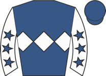 Neptune Legend ▲ cls | 3.25 | - | 1 | 5-7-1-1-5-1 | going✓ trk✓ | 65 ↑ | 93 | ★★★★★ | Stumbled start, soon chased leaders, switched right and ridden to lead 1f out, pushed out | |
| 2 | 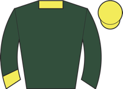 Nogo's Dream ◆ 1 M2 | 5.00 | - | 4 | 6-2-5-2-6-4 | 1r 1p | going✓ trip✓ trk✓ | 75 | 94 | ★★★☆☆ | Prominent, pushed along over 1f out, outpaced inside final furlong, weakened inside final |
| 1 | 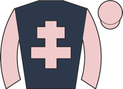 Arry Up ◆ 2 ⚠ ground | 5.50 | - | 3 | 3-1-1-1-19-4 | 76 ↑ | 94 | ★★★★☆ | Led, ridden over 1f out, headed inside final furlong, lost two places and faded towards fi | ||
| 5 | 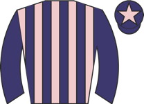 Havana Smile ◆ 3 | 7.00 | - | 5 | 2-7-4-7-1-6 | 2r 1W | going✓ trip✓ trk✓ | 77 | 91 | ★★★☆☆ | Slowly into stride, towards rear, ridden 2f out, kept on one pace |
| 4 | 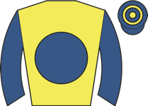 Smart Vision ⚠ ground ▼ cls | 9.00 | - | 7 | 8-10-9-8-9-9 | 79 ↓ | 94 | ★★☆☆☆ | Went to post early in hood, took keen hold, in touch with leaders, ridden 2f out, lost pos | ||
| 7 | 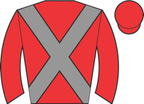 Correspondence | 9.00 | - | 2 | 2-6-3-1-2-6 | going✓ trip✓ trk✓ | 68 ↑ | 91 | ★★★☆☆ | Took keen hold, tracked leaders, lost position over 2f out, soon beaten | |
| 3 | 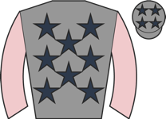 Brave Nation ⚠ ground | 11.00 | - | 6 | 3-13-3-12-7-4 | 75 ↓ | 97 | ★★☆☆☆ | Chased clear front duo, pushed along over 1f out, no impression |
| Res | Horse | Price | BSP | Dr | Form | Crse | Suit | OR | Spd | TF | Last comment |
|---|---|---|---|---|---|---|---|---|---|---|---|
| 5 | 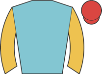 United Authority ◆ 3 | 2.75 | - | 7 | unraced | draw✓ | - | ||||
| 6 | 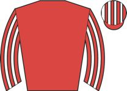 On Target ⚠ draw | 5.00 | - | 1 | unraced | - | |||||
| 1 | 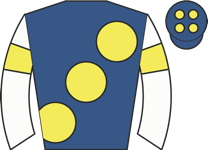 Zero Error | 6.00 | - | 6 | unraced | - | |||||
| 7 | Jinman ◆ 1 | 7.00 | - | 9 | unraced | draw✓ | - | ||||
| 4 | 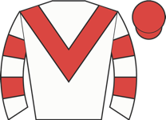 New Oxford ◆ 2 | 9.00 | - | 8 | unraced | draw✓ | - | ||||
| 3 | 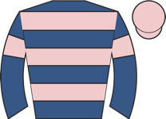 Somerton ⚠ draw | 9.00 | - | 2 | unraced | - | |||||
| 2 | 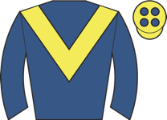 Thunder Home ⚠ draw ⚠ ground | 21.00 | - | 3 | 7-5 | 87 | Hampered and carried right start, towards rear, some headway over 1f out, outpaced inside | ||||
| 8 | 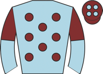 Harbour Prince ⚠ hard trk | 34.00 | - | 5 | 7 | 84 | Raced wide early, soon in touch with leaders, briefly disputed lead after 2f, outpaced by | ||||
| 9 | 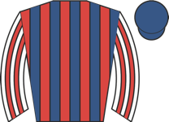 Desert Symphony ⚠ hard trk ▲ cls | 67.00 | - | 4 | 8 | 90 | Dwelt start, always towards rear |
| Res | Horse | Price | BSP | Dr | Form | Crse | Suit | OR | Spd | TF | Last comment |
|---|---|---|---|---|---|---|---|---|---|---|---|
| 1 | Aperoll ◆ 1 | 2.50 | - | 7 | 1-3 | going✓ trip✓ trk✓ draw✓ | 92 | 94 | Led, ridden over 1f out, headed 1f out, kept on final furlong, lost second towards finish | ||
| 2 | 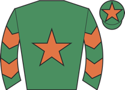 Bayside View ◆ 2 ⚠ draw ▲ cls | 4.00 | - | 2 | 2-1 | going✓ trip✓ | 89 | 92 | Made all and soon clear, ridden over 1f out and edged left, kept on, unchallenged | ||
| 5 | War Banner ◆ 3 ★ EYE ▲ cls | 8.00 | - | 4 | 1 | going✓ | 89 | Led, ridden and headed 2f out, ran on gamely inside final furlong, rallied towards finish, | |||
| 3 | 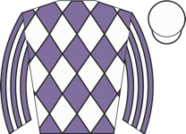 Tall Trees ★ EYE ⚠ draw ▲ cls | 8.00 | - | 1 | 5-8-2 | going✓ trip✓ | 88 | 91 | ★★★☆☆ | Prominent, central group, ridden to chase leaders over 1f out, ran on well and took second | |
| 4 | 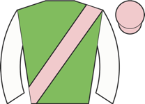 Celestia ▲ cls | 9.00 | - | 3 | 3-1 | going✓ trip✓ trk✓ | 84 | 90 | Raced in last, made headway going well 2f out, ridden to lead over 1f out, faced sustained | ||
| 8 | 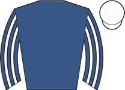 Grey Tamam ★ EYE ▲ cls | 13.00 | - | 6 | 3 | trk✓ draw✓ | 90 | Midfield, dropped towards rear halfway, ran green when outpaced over 1f out, rallied when | |||
| 7 | 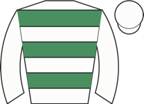 Lady Caroline Lamb ▲ cls | 17.00 | - | 5 | 3-1 | going✓ trip✓ trk✓ | 77 | 90 | Raced in last pair, ridden into third over 2f out, went second 1f out, led final furlong, | ||
| 6 | 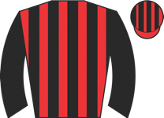 Guadalevin ▲ cls | 51.00 | - | 8 | 3-2-4 | trip✓ trk✓ draw✓ | 75 | 90 | ★★☆☆☆ | Awkward start, midfield, ridden 2f out, kept on same pace and went fourth entering final 1 |
| Res | Horse | Price | BSP | Dr | Form | Crse | Suit | OR | Spd | TF | Last comment |
|---|---|---|---|---|---|---|---|---|---|---|---|
| 5 | 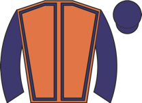 Kamaway ◆ 3 ▲ cls | 3.00 | - | 4 | 8-4-8-1-2-1 | trk✓ | 72 ↑ | 94 | ★★★★★ | Held up in rear of mid-division, headway and ridden to challenge leaders over 1f, sustaine | |
| 1 | 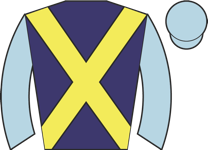 Tawajjah ◆ 1 M2 ★ EYE ▼ cls | 3.25 | - | 5 | 7-2-2-1-2 | going✓ trip✓ trk✓ | 85 | 93 | ★★★★☆ | Towards rear, waiting for room on near side over 1f out, ran on strongly inside final furl | |
| 4 | 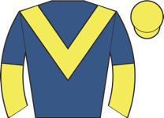 Londoner ◆ 2 ▼ cls | 7.00 | - | 2 | 12-3-1-5-9-5 | trip✓ trk✓ | 87 | 94 | ★★★☆☆ | Held up in midfield, in touch with leaders and ridden 2f out, headway and every chance ent | |
| 2 | 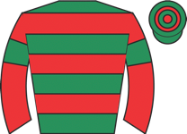 Assail | 7.00 | - | 3 | 9-2-6-6-4-3 | trk✓ | 83 ↓ | 92 | ★★★☆☆ | Steadied towards rear, pushed along and improved 2f out, ridden over 1f out and ran on, he | |
| 6 | Morcar ⚠ hard trk | 8.00 | - | 7 | 8-10-5-6-1-2 | going✓ trip✓ | 78 | 91 | ★★★★☆ | Held up in rear, headway when not much room over 2f out, went second inside final furlong, | |
| 3 | 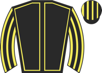 Percival ⚠ FR form | 13.00 | - | 6 | 5-1-4-5-16-6 | trip✓ | 83 | 101 | ★★☆☆☆ | Held up in rear, outpaced over 3f out, soon ridden, bit short of room over 1f out, drifted | |
| 0 | 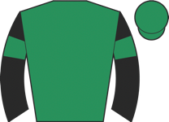 Thinthread ▼ cls ⚠ FR form | 15.00 | - | 1 | 1-5-3-1-3-5 | trip✓ | 86 | 92 | Midfield, pushed along to make headway towards centre from over 2f out, outpaced over 1f o |
| Res | Horse | Price | BSP | Dr | Form | Crse | Suit | OR | Spd | TF | Last comment |
|---|---|---|---|---|---|---|---|---|---|---|---|
| 0 | 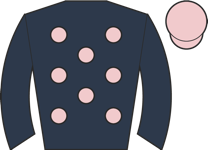 Probation ◆ 3 ▲ cls | 2.38 | - | 2 | 3-4-3-1 | going✓ trk✓ | 70 | 94 | ★★★★★ | Raced in third, went second over 3f out, led over 1f out, ridden clear final furlong, comf | |
| 0 | 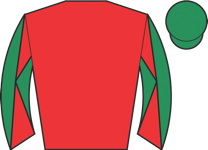 My Ballyquinn ◆ 1 M2 ★ EYE ▲ cls | 3.00 | - | 3 | 7-2-4-1-2-1 | going✓ trip✓ trk✓ | 89 ↑ | 80 | ★★★☆☆ | Midfield, briefly short of room when shaken up over 2f out, ridden and headway over 1f out | |
| 0 | Alma Latina ◆ 2 ▲ cls | 3.25 | - | 1 | 3-2-1-3 | 1r 1p | going✓ trk✓ | 82 | 86 | ★★★★☆ | Towards rear, taken towards centre to make headway from over 3f out. hung right when took |
| Res | Horse | Price | BSP | Dr | Form | Crse | Suit | OR | Spd | TF | Last comment |
|---|---|---|---|---|---|---|---|---|---|---|---|
| 0 | 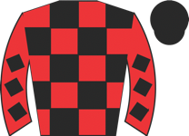 Aravalli ★ EYE ⚠ hard trk ▲ cls | 3.00 | - | 1 | 7-4-4-9-1-1 | going✓ trip✓ | 62 | 79 | ★★★★★ | Raced in third, ridden over 2f out, kept on strongly and headway to lead over 1f out, ran | |
| 0 | 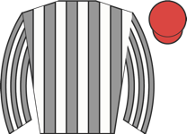 Shirakawa ◆ 1 M2 ★ EYE | 4.00 | - | 2 | 12-7-4-7-1-1 | going✓ trip✓ trk✓ | 64 | 88 | ★★★★☆ | Made all, pushed along 2f out, ridden 1f out, kept on well and just prevailed on nod when | |
| 0 | 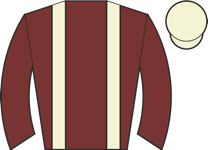 Talitha Rouge ◆ 3 ▼ cls | 5.00 | - | 4 | 3-4-3 | trk✓ | 68 | 81 | ★★★★☆ | Midfield, pushed along 2f out, went third final furlong, stayed on | |
| 0 | 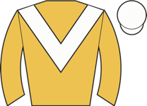 Albertini Star ★ EYE | 9.00 | - | 5 | 8-6-10-2 | going✓ trk✓ | 63 | 87 | ★★★☆☆ | Towards rear, outpaced over 1f out, rallied when ridden inside final furlong, ran on well, | |
| 0 | 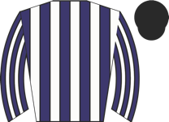 Huggable | 9.00 | - | 3 | 2-2-12-6-9-4 | 1r 1p | going✓ trip✓ trk✓ | 64 | 88 | ★★★☆☆ | Wore hood to post, prominent, ridden along over 2f out, weakened over 1f out |
| 0 | 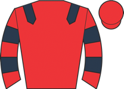 We Ride At Dawn ◆ 2 ▲ cls | 13.00 | - | 6 | 9-6-5-10-2-4 | going✓ trip✓ | 62 | 88 | ★★★☆☆ | Led, ridden to assert 2f out, headed over 1f out, weakened 1f out | |
| 0 | 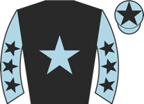 Pershalla ⚠ ground ▲ cls | 15.00 | - | 7 | 12-1-2-7-9-5 | 62 | 83 | ★★☆☆☆ | Held up in rear, kept on wide of field final 110 yards, never nearer |
| Res | Horse | Price | BSP | Dr | Form | Crse | Suit | OR | Spd | TF | Last comment |
|---|---|---|---|---|---|---|---|---|---|---|---|
| 0 | 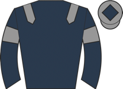 Sail On Sailor ◆ 2 ⚠ draw ▲ cls | 4.00 | - | 10 | 7-2-3-1-1-1 | going✓ trip✓ trk✓ | 66 ↑ | 86 | ★★★★★ | Towards rear, made good headway going well 3f out, pushed along over 2f out, ridden over 1 | |
| 0 | 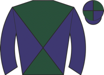 Gone Rogue M2 ★ EYE ▲ cls | 5.00 | - | 3 | 1-2-2-5-6-1 | going✓ trip✓ trk✓ draw✓ | 64 | 84 | ★★★★☆ | Bumped slightly start, chased leaders, waiting for room over 2f out, switched right over 1 | |
| 0 | 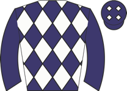 Lodge | 7.00 | - | 4 | 1-2-5-10-8-5 | going✓ draw✓ | 69 | 92 | ★★★☆☆ | Mid-division, pushed along well over 1f out, stayed on, never threatened | |
| 0 | 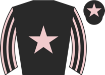 Strong Voice | 8.00 | - | 6 | 3-4-11-2 | going✓ trk✓ | 66 | 84 | ★★★☆☆ | Chased leaders, waiting for room over 2f out, switched left over 1f out, ridden and chased | |
| 0 | Billy Mill ◆ 1 ▼ cls | 9.00 | - | 2 | 6-3-2-2-2-6 | trip✓ draw✓ | 69 | 94 | ★★★☆☆ | Held up in rear, pushed along over 2f out, modest headway inside final furlong, kept on on | |
| 0 | 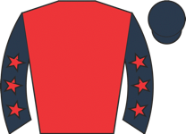 Marsh Benham ⚠ draw | 9.00 | - | 11 | 8-2-7-7-6-2 | going✓ trip✓ | 66 | 89 | ★★★☆☆ | Wore hood to post, midfield, ridden over 1f out, stayed on into third final furlong, took | |
| 0 | 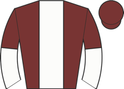 Prodigal Son ⚠ ground | 13.00 | - | 1 | 5-8-1-3-7-4 | trip✓ trk✓ draw✓ | 67 | 87 | ★★★☆☆ | Raced in last, ridden along over 2f out, no chance with leaders over 1f out, went modest f | |
| 0 | 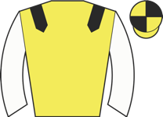 Double Time ◆ 3 | 17.00 | - | 5 | 1-6-1-4-6-7 | trip✓ | 68 ↑ | 93 | ★★☆☆☆ | Led, ridden 2f out, headed over 1f out, soon weakened | |
| 0 | 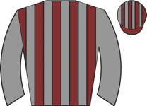 Ararat ⚠ draw ⚠ ground ▼ cls | 21.00 | - | 12 | 4-7-6-4-3-13 | 67 ↓ | 94 | ★★☆☆☆ | Mounted in chute, midfield, ridden over 2f out, soon lost position and switched left, mino | ||
| 0 | 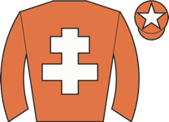 Berning Hot ▲ cls | 21.00 | - | 7 | 7-3-8-6-2-6 | trip✓ | 57 | 90 | ★★☆☆☆ | Towards rear, drifted left when ridden over 1f out, made no impression | |
| 0 | 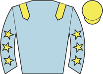 Amused ▼ cls | 26.00 | - | 8 | 5-5-10-2-11-10 | 1r | going✓ | 67 | 73 | ★★☆☆☆ | Slowly away and always behind |
| 0 | 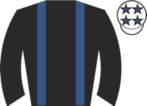 Dalmally ⚠ draw ▲ cls | 26.00 | - | 9 | 7-8-5-8-6-3 | 57 ↓ | 89 | ★★☆☆☆ | Chased leaders, ridden over 2f out, stayed on one pace from over 1f out |
| Res | Horse | Price | BSP | Dr | Form | Crse | Suit | OR | Spd | TF | Last comment |
|---|---|---|---|---|---|---|---|---|---|---|---|
| 1 | 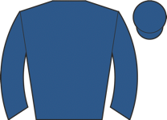 Jassas ◆ 2 | 4.00 | - | 4 | unraced | - | |||||
| 8 | Lead The Squad ◆ 3 | 4.50 | - | 3 | unraced | draw✓ | - | ||||
| 3 | 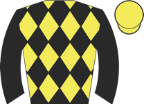 Night Star ◆ 1 ⚠ draw ▼ cls | 5.00 | - | 9 | 5-3 | 1r 1p | trk✓ | 91 | Held up in touch, asked for effort 2f out, headway into third near finish, not reach leade | ||
| 2 | 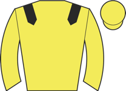 Narrjoo ⚠ draw | 6.00 | - | 8 | unraced | - | |||||
| 4 | Mister Whippy | 7.00 | - | 1 | unraced | draw✓ | - | ||||
| 7 | Kaito | 11.00 | - | 5 | 7-4 | 84 | Chased leaders, pushed along well over 2f out, soon well held | ||||
| 6 | Peak Tram ★ EYE | 17.00 | - | 2 | 4 | draw✓ | 85 | Prominent, outpaced 2f out, rallied and some headway 1f out, kept on | |||
| 5 | Mino | 21.00 | - | 6 | 6 | 84 | Slowly away, always towards rear | ||||
| 9 | Hey Dude ⚠ draw ⚠ ground | 151.00 | - | 7 | 11-12 | 88 | Bumped start, ran in snatches, midfield, weakened over 1f out |
| Res | Horse | Price | BSP | Dr | Form | Crse | Suit | OR | Spd | TF | Last comment |
|---|---|---|---|---|---|---|---|---|---|---|---|
| 1 | Round The Table ◆ 1 ★ EYE ▲ cls | 1.91 | - | 3 | 5-1 | going✓ trip✓ | 90 | Chased leader, shaken up and led 2f out, ran green when ridden over 1f out, stayed on well | |||
| 2 | Interstate ◆ 2 ★ EYE ▲ cls | 2.62 | - | 4 | 10-2 | trk✓ | 90 | Midfield when bumped inside first furlong, soon in touch with leaders, headway towards cen | |||
| 3 | Dancingondiamonds ◆ 3 ▲ cls | 6.00 | - | 2 | 5-5-8-- | 53 | ★★☆☆☆ | Held up in rear, well behind when pulled up before 3 out | |||
| 4 | Twin And Tonic ⚠ ground | 67.00 | - | 1 | 11-9 | 78 | Held up in rear, struggling 3f out, never in contention |
| Res | Horse | Price | BSP | Dr | Form | Crse | Suit | OR | Spd | TF | Last comment |
|---|---|---|---|---|---|---|---|---|---|---|---|
| 3 | Ten Clarets | 2.75 | - | 1 | 4-2 | trk✓ | 79 | 93 | Midfield, shaken up and progress 2f out, went second over 1f out, strongly pressed winner | ||
| 2 | Jumeirah Storm ◆ 2 ★ EYE | 3.25 | - | 2 | 4-1 | 1r 1W | going✓ trip✓ trk✓ | 81 | 90 | In touch with leaders, headway over 2f out, pushed along 1f out, led approaching final 110 | |
| 4 | Rhodes Runner ◆ 3 ★ EYE ▲ cls | 4.33 | - | 4 | 4-3-2 | 1r 1p | trip✓ trk✓ | 77 | 91 | ★★★☆☆ | Prominent, ridden over 2f out, hung right from over 1f out, kept on well inside final furl |
| 1 | Shadow King ◆ 1 ▼ cls | 7.50 | - | 5 | 5-1-3 | trip✓ trk✓ | 84 | 95 | ★★★☆☆ | Led, ridden and headed over 1f out, soon weakened | |
| 5 | Attack Attack ⚠ ground ▼ cls | 15.00 | - | 3 | 11-10-3 | trk✓ | 72 | 85 | ★★★☆☆ | Chased leaders, pushed along over 1f out, no impression |
| Res | Horse | Price | BSP | Dr | Form | Crse | Suit | OR | Spd | TF | Last comment |
|---|---|---|---|---|---|---|---|---|---|---|---|
| 7 | Sargent Dennis ◆ 1 ★ EYE | 3.75 | - | 4 | 5-2-2-1 | going✓ trip✓ trk✓ | 74 | 94 | ★★★★★ | Midfield, ridden 3f out, headway to press leader 2f out, carried left over 1f out where le | |
| 5 | Lamlash Bay M2 ★ EYE ▲ cls | 5.50 | - | 7 | 14-4-4-5-1 | 1r | going✓ trip✓ trk✓ draw✓ | 67 | 93 | ★★★★☆ | Went right and bumped rival start, soon raced in close second, led before halfway, steadil |
| 2 | Alfa Duplicate ◆ 2 | 6.50 | - | 3 | 1-3-1-6-6-3 | trip✓ trk✓ | 73 | 95 | ★★★☆☆ | Went early to post, prominent, pushed along 2f out, kept on one pace | |
| 8 | Seeing Stars | 7.00 | - | 6 | 2-2-1-3-4-3 | 1r 1p | trk✓ draw✓ | 68 | 92 | ★★★★☆ | Led, pushed along go two lengths clear over 1f out, reduced lead just inside final furlong |
| 6 | Blue Orbit ⚠ ground ▼ cls | 8.50 | - | 8 | 13-2-4-10-5-4 | trk✓ draw✓ | 74 ↓ | 93 | ★★★☆☆ | Wore red hood to post, chased leaders, pushed along over 2f out, stayed on one pace | |
| 3 | Frio ◆ 3 ▼ cls | 9.00 | - | 5 | 3-4-4 | 1r | trk✓ | 75 | 92 | ★★★☆☆ | Midfield, ridden over 2f out, kept on |
| 1 | Ay Up Duck ⚠ draw ⚠ ground ▼ cls | 9.00 | - | 1 | 2-2-1-8-8-7 | trk✓ | 75 | 94 | ★★☆☆☆ | Taken down early wearing hood, close up, led after 1f, joined 3f out, ridden and headed ov | |
| 4 | Bucklow Hill ⚠ draw ⚠ ground ▼ cls | 13.00 | - | 2 | 1-11-3 | 1r | trip✓ | 75 | 89 | ★★☆☆☆ | Mounted in chute, went to post early wearing red hood, awkward start, in rear, pushed alon |
| Res | Horse | Price | BSP | Dr | Form | Crse | Suit | OR | Spd | TF | Last comment |
|---|---|---|---|---|---|---|---|---|---|---|---|
| 0 | Farandaway ◆ 1 ⚠ draw | 3.50 | - | 8 | 4-3-2-1-2-1 | going✓ trip✓ trk✓ | 73 | 95 | ★★★☆☆ | Took keen hold, tracked leaders, shaken up over 1f out, led final furlong, pressed final 1 | |
| 0 | Commander Of Life ◆ 2 M2 ⚠ draw ▼ cls | 3.75 | - | 6 | 4-3-5-5-4-2 | 1r | going✓ trip✓ trk✓ | 73 ↓ | 96 | ★★★★★ | Went to post early in hood, reared in stalls before start, raced centre, held up in midfie |
| 0 | Evocative Spark ◆ 3 ⚠ draw | 7.50 | - | 7 | 9-1-1-7-1-4 | 1r | going✓ trip✓ trk✓ | 71 ↑ | 96 | ★★★☆☆ | Edged left start, raced in last, soon outpaced, pushed along over 3f out, ridden over 2f o |
| 0 | Al Muqdad | 7.50 | - | 4 | 6-10-6-3-2-5 | 2r 1p | going✓ trip✓ trk✓ | 70 ↓ | 92 | ★★★★☆ | Midfield, headway and took third 1f out, chased leading pair inside final furlong, no extr |
| 0 | Lumenbourg ⚠ ground | 7.50 | - | 1 | 8-10-3-1-4-6 | 2r | trk✓ draw✓ | 66 | 92 | ★★★☆☆ | Close up, pushed along over 2f out, faded 1f out |
| 0 | Straight A ★ EYE | 9.00 | - | 5 | 4-4-2-2-5-4 | 2r 1p | going✓ trip✓ trk✓ | 69 | 91 | ★★★☆☆ | Taken down early, held up in rear, still plenty to do when making headway inside final fur |
| 0 | Jenni ⚠ ground ▲ cls | 11.00 | - | 3 | 3-8-14-9-10-4 | 58 ↓ | 92 | ★★★★☆ | Slowly away, in rear, taken toward centre to make some headway inside final furlong, ran o | ||
| 0 | War Howl ⚠ ground | 51.00 | - | 2 | 9-13-11-18-10-9 | 1r | draw✓ | 69 ↓ | 90 | ★★☆☆☆ | Always in rear, rider looked down over 1f out, soon eased |
| Res | Horse | Price | BSP | Dr | Form | Crse | Suit | OR | Spd | TF | Last comment |
|---|---|---|---|---|---|---|---|---|---|---|---|
| 0 | Albeyours ◆ 3 | 4.00 | - | 7 | 5-1-2-5-3-1 | 1r 1p | trk✓ | 53 | 97 | ★★★★☆ | Prominent, ridden and edged right when led over 1f out, pressed final furlong, asserted ne |
| 0 | Palmarian ◆ 1 M2 | 4.50 | - | 8 | 5-8-9-5-1-2 | 2r 1p | going✓ trip✓ trk✓ | 60 ↓ | 90 | ★★★★☆ | Took keen hold, midfield, ridden over 2f out, headway entering final furlong, chased winne |
| 0 | Mariner ★ EYE | 5.00 | - | 6 | 8-7-2-8-9-3 | 1r 1p | going✓ trip✓ trk✓ | 62 | 85 | ★★★★★ | Chased leaders, pushed along over 2f out, kept on inside final furlong, no impression on f |
| 0 | We've Got This ◆ 2 ▼ cls | 6.50 | - | 3 | 4-2-6-5-7-3 | trip✓ trk✓ | 62 | 94 | ★★★☆☆ | Midfield, ridden and progress 2f out, went third and challenged final furlong, held close | |
| 0 | Boubyan | 8.50 | - | 1 | 5-9-11-2-5-4 | going✓ trip✓ trk✓ | 64 | 84 | ★★☆☆☆ | Led, headed over 1f out, weakened final 110 yards | |
| 0 | Theme Park ⚠ ground | 8.50 | - | 5 | 4-9-6-9-10-5 | 65 ↓ | 86 | ★★☆☆☆ | Slowly away, in rear, pushed along over 2f out and improved on inner, stayed on one pace f | ||
| 0 | Chilly Breeze ▼ cls | 15.00 | - | 2 | 9-6-8-9-7-6 | 65 ↓ | 90 | ★★☆☆☆ | Wore hood to post, midfield, ridden over 3f out, outpaced 2f out, minor headway final 110y | ||
| 0 | Whiskey Pete ⚠ ground | 26.00 | - | 4 | 5-6-13-11-15-9 | 1r | 58 ↓ | 87 | ★★☆☆☆ | Midfield, ridden over 2f out, soon beaten |
| Res | Horse | Price | BSP | Dr | Form | Crse | Suit | OR | Spd | TF | Last comment |
|---|---|---|---|---|---|---|---|---|---|---|---|
| 0 | Alterity ◆ 1 ★ EYE | 2.38 | - | 6 | 5-3-3-1 | going✓ trk✓ | 74 | 87 | ★★★★☆ | Made all, keen early and set strong pace, quickened clear over 1f out, ran on well, won go | |
| 0 | Brighlee M2 | 4.00 | - | 1 | 6-2-4-5-11-3 | going✓ trk✓ | 73 ↓ | 90 | ★★★☆☆ | Slowly away, headway into mid-division 8f out, not clear run over 2f out, headway over 1f | |
| 0 | Shadow Brigade ⚠ ground | 7.00 | - | 4 | 7-3-8-7-4 | trk✓ | 74 | 89 | ★★★☆☆ | Held up in touch in rear, angled out and headway over 2f out, close up 1f out, soon hung l | |
| 0 | Zarco ◆ 3 ▼ cls | 9.00 | - | 2 | 5-4-6 | 67 | 93 | ★★★★★ | Tracked leaders, pushed along and outpaced over 2f out, ridden and hung left over 1f out, | ||
| 0 | Time Twister ▲ cls | 9.00 | - | 5 | 7-10-6-6-4 | 57 | 84 | ★★☆☆☆ | Raced in last, asked for effort over 2f out, went moderate 4th final furlong, no impressio | ||
| 0 | Saxophonist ◆ 2 ★ EYE | 11.00 | - | 3 | 3-8-3-3-3-5 | 1r 1p | trk✓ | 71 | 90 | ★★★★☆ | Midfield, carried left and hampered 2f out, kept on inside final furlong, short of room ag |
| Res | Horse | Price | BSP | Dr | Form | Crse | Suit | OR | Spd | TF | Last comment |
|---|---|---|---|---|---|---|---|---|---|---|---|
| 0 | Victory Gold ★ EYE ▼ cls | 3.25 | - | 2 | 2-4-16-1 | going✓ trip✓ trk✓ | 87 | 90 | ★★★☆☆ | Made all, pushed along 2f out quickened over 1f out, ran on well, ridden inside final 110y | |
| 0 | Waasil ◆ 1 ▼ easy trk ▼ cls | 4.00 | - | 5 | 4-1 | trip✓ trk✓ | 81 | 97 | Midfield, smooth progress into third over 2f out, shaken up to lead entering final furlong | ||
| 0 | Flying Pirate ◆ 2 ▼ easy trk ▼ cls | 4.50 | - | 4 | 1-3 | trk✓ | 85 | 92 | Unruly in preliminaries, sweating and led down to start, chased leaders, angled out and pu | ||
| 0 | Duke of Burgundy ◆ 3 | 5.00 | - | 3 | 3-1 | trip✓ trk✓ | 76 | 95 | Rear mid-division, cajoled along at times early, pushed along well over 2f out, ridden and | ||
| 0 | Metamouse ▼ cls | 8.00 | - | 1 | 4-1-4 | trk✓ | 79 | 89 | ★★★☆☆ | Restless in stalls, fly jumped start, rear mid-division, headway 3f out, ridden disputing |
| Res | Horse | Price | BSP | Dr | Form | Crse | Suit | OR | Spd | TF | Last comment |
|---|---|---|---|---|---|---|---|---|---|---|---|
| 0 | Lorraine | 1.91 | - | 7 | unraced | - | |||||
| 0 | Art Of Life ◆ 2 | 5.00 | - | 6 | 6 | 1r | 92 | Chased leaders, lost position slightly over 4f out, green and no impression from 2f out | |||
| 0 | Blue Corn ◆ 3 | 6.00 | - | 3 | unraced | draw✓ | - | ||||
| 0 | Babzini ◆ 1 ▼ easy trk | 8.00 | - | 5 | 3-6 | trk✓ draw✓ | 96 | Midfield, asked for effort over 1f out, held final furlong | |||
| 0 | Ruby Sands ⚠ draw | 9.00 | - | 1 | unraced | - | |||||
| 0 | Moda Rosa | 13.00 | - | 4 | unraced | draw✓ | - | ||||
| 0 | Dark Reign ⚠ draw ▼ cls | 21.00 | - | 2 | 9 | 88 | Dwelt, always towards rear, well beaten inside final 2f | ||||
| 0 | Lady Miranda ⚠ ground ▼ cls | 51.00 | - | 8 | 7-7 | 85 | Midfield central group, outpaced over 1f out, soon weakened |
| Res | Horse | Price | BSP | Dr | Form | Crse | Suit | OR | Spd | TF | Last comment |
|---|---|---|---|---|---|---|---|---|---|---|---|
| 0 | Always Perfect ◆ 1 ★ EYE ▼ easy trk ⚠ draw | 3.75 | - | 3 | 4-5-3-3-1 | going✓ trip✓ trk✓ | 68 | 93 | ★★★★★ | Chased leaders, smooth headway 2f out, ridden and led over 1f out, went few lengths clear | |
| 0 | Jimmy Knocker M2 | 5.50 | - | 5 | 2-1-7-7-5-2 | 1r 1p | going✓ trip✓ trk✓ draw✓ | 68 | 93 | ★★★★☆ | Towards rear, headway 2f out, challenged winner well inside final furlong, just held |
| 0 | Silver Wraith ◆ 3 ▼ easy trk ▼ cls | 8.00 | - | 4 | 2-1-1-2-7-5 | going✓ trip✓ trk✓ draw✓ | 74 ↑ | 92 | ★★★☆☆ | Tracked leaders, pushed along over 2f out, dropped away over 1f out | |
| 0 | Eightthreeone ▼ easy trk | 9.00 | - | 8 | 3-1-3-3-2-6 | going✓ trip✓ trk✓ | 68 | 92 | ★★★☆☆ | Wore hood to post, raced in last, ridden over 2f out, soon kept on, no extra inside final | |
| 0 | Just Jump ⚠ draw | 9.00 | - | 2 | 7-5-8---1-5 | 1r | going✓ trk✓ | 62 | 95 | ★★★☆☆ | Took keen hold, prominent, ridden over 2f out, soon hampered, kept on same pace inside fin |
| 0 | Distant Rumble ◆ 2 ▼ easy trk ▼ cls | 11.00 | - | 10 | 6-6-2-1-3-7 | going✓ trip✓ trk✓ | 69 | 96 | ★★★☆☆ | Mounted in chute and taken down early wearing hood, slowly into stride, held up in rear, n | |
| 0 | Waistcoat ▼ easy trk ⚠ draw ⚠ ground ▼ cls | 11.00 | - | 1 | 2-9-2-1-9-10 | trip✓ trk✓ | 74 ↑ | 96 | ★★★☆☆ | Midfield, ridden over 2f out, kept on same pace inside final furlong | |
| 0 | Raffles Angel ▼ easy trk ⚠ ground | 11.00 | - | 9 | 4-1-8-9-6-3 | trip✓ trk✓ | 73 | 93 | ★★★☆☆ | Wore hood to post, took keen hold, in touch with leaders, ridden over 2f out, kept on over | |
| 0 | Mumayaz | 15.00 | - | 6 | 4-6-1-4-3-5 | going✓ trip✓ trk✓ draw✓ | 71 ↑ | 94 | ★★★☆☆ | Midfield, dropped to rear 4f out, ridden over 2f out, headway entering final furlong, no e | |
| 0 | Phoenix Moon ▼ easy trk | 15.00 | - | 7 | 4-1-4-2-3-8 | going✓ trip✓ trk✓ | 63 | 92 | ★★★☆☆ | Midfield, ridden 2f out, soon held |
| Res | Horse | Price | BSP | Dr | Form | Crse | Suit | OR | Spd | TF | Last comment |
|---|---|---|---|---|---|---|---|---|---|---|---|
| 0 | Campeona ◆ 1 ▼ easy trk ▲ cls | 1.40 | - | 3 | 8-7-7-2-1 | going✓ trk✓ | 61 | 84 | ★★★★★ | Towards rear but in touch, pushed along soon after halfway, ridden to make headway from 2f | |
| 0 | Golden Flame ◆ 3 M2 ▼ easy trk | 6.50 | - | 4 | 8-6-5-3-1-2 | going✓ trip✓ trk✓ | 66 ↓ | 75 | ★★★★☆ | Raced in last, progress into second and challenged 2f out, kept on same pace | |
| 0 | The Craftymaster ◆ 2 ▼ easy trk ▲ cls | 7.00 | - | 1 | 3-6-5-1-2-1 | going✓ trip✓ trk✓ | 53 ↓ | 81 | ★★★☆☆ | Midfield, pushed along and progress over 2f out, led over 1f out, strongly pressed near fi | |
| 0 | Diamond Bay | 13.00 | - | 2 | 3-14-6-7-5-4 | trk✓ | 66 ↓ | 79 | ★★☆☆☆ | Dwelt slightly, prominent, lost ground and pushed along 4f out, no response |
| Res | Horse | Price | BSP | Dr | Form | Crse | Suit | OR | Spd | TF | Last comment |
|---|---|---|---|---|---|---|---|---|---|---|---|
| 0 | Dancing Tiger ◆ 1 ★ EYE ▼ easy trk ▼ cls | 2.88 | - | 3 | 3-4-1-6-2-2 | going✓ trip✓ trk✓ | 75 | 87 | ★★★☆☆ | Slowly into stride, towards rear, headway 2f out, ridden strongly and stayed on well from | |
| 0 | Sarangpur ◆ 3 M2 | 3.00 | - | 5 | 8-3-4-1-1-2 | going✓ trip✓ trk✓ | 70 ↑ | 79 | ★★★★★ | Wore hood to post, pulled hard under restraint, led, ridden over 1f out, kept on, reduced | |
| 0 | Into Battle ▼ cls | 4.50 | - | 2 | 4-1-10-2-3-1 | 1r | going✓ trk✓ | 75 ↑ | 68 | ★★★☆☆ | Made all, shaken up after 2 out, eased near finish, comfortably |
| 0 | Nowshesdancing ◆ 2 ★ EYE ▼ easy trk ▼ cls | 6.00 | - | 1 | 1-3-6-3 | trk✓ | 75 | 89 | ★★★★☆ | Held up behind leaders, raced keenly, ridden 3f out, briefly outpaced 2f out, rallied and | |
| 0 | Port George ⚠ ground | 26.00 | - | 4 | 7-2-7-6 | trk✓ | 67 | 77 | ★★☆☆☆ | Raced wide tracking leaders and pushed along at times, reminders turning in, hung left and |
| Res | Horse | Price | BSP | Dr | Form | Crse | Suit | OR | Spd | TF | Last comment |
|---|---|---|---|---|---|---|---|---|---|---|---|
| 0 | Baloo's Blues ◆ 1 ★ EYE ▲ cls | 4.00 | - | 3 | 2-4-5-2-9-1 | going✓ trip✓ trk✓ | 64 | 90 | ★★★★☆ | Led narrowly for 3f, headed and chased leader, ridden 2f out, headway to lead 1f out, kept | |
| 0 | Raintown ◆ 2 M2 ★ EYE | 4.50 | - | 6 | 7-8-3-4-2-3 | 2r 2p | going✓ trk✓ | 63 ↓ | 89 | ★★★★★ | Slowly away, held up in mid-division, headway on inside over 3f out, kept on inside final |
| 0 | Just An Hour M2 ▼ easy trk | 4.50 | - | 9 | 5-4-2-6-3-4 | 1r | going✓ trk✓ | 74 | 82 | ★★★☆☆ | Prominent, ridden to press leader over 1f out, led final 110yds, headed near finish |
| 0 | Caph Star ◆ 3 ▼ cls | 5.00 | - | 1 | 5-1-3-7-5-3 | trip✓ trk✓ | 72 | 89 | ★★★☆☆ | Took keen hold, prominent, went third over 1f out, switched right inside final furlong, ra | |
| 0 | Alazwar ⚠ ground ▲ cls | 8.00 | - | 8 | 15-2-9-10-12-2 | trip✓ trk✓ | 57 ↓ | 82 | ★★★☆☆ | Chased leader, led under 4f out, headed over 3f out, kept on final 2f, no impression on wi | |
| 0 | Lerwick | 11.00 | - | 5 | 4-6-3-4-5-6 | trk✓ | 67 ↓ | 94 | ★★☆☆☆ | Mid-division, disputing fifth before 2f out, ridden along in fourth 1f out, one pace there | |
| 0 | Zambezi Magic | 13.00 | - | 7 | 1-7-5-7-5-6 | 1r | trip✓ | 60 | 86 | ★★☆☆☆ | Mounted in chute and went to post early, slowly away and in rear, hung left from 3f out, k |
| 0 | Port Louis | 15.00 | - | 4 | 9-2-10-8-12-3 | trk✓ | 65 ↑ | 88 | ★★★☆☆ | Rear of midfield, ridden and headway over 2f out, kept on same pace inside final furlong | |
| 0 | One Cool Dreamer ▼ easy trk ▼ cls | 17.00 | - | 2 | 4-5-8-2-4-7 | trk✓ | 67 ↓ | 88 | ★★☆☆☆ | Went left start, soon raced in second, pushed along and lost position 2f out, weakened qui |
| Res | Horse | Price | BSP | Dr | Form | Crse | Suit | OR | Spd | TF | Last comment |
|---|---|---|---|---|---|---|---|---|---|---|---|
| 0 | Evenfall ◆ 3 | 2.25 | - | 4 | unraced | - | |||||
| 0 | Anchiano ◆ 1 | 2.50 | - | 1 | 5-1 | 1r 1W | going✓ trip✓ trk✓ | 89 | Always led, ridden and quickened 2f out, pushed out final furlong | ||
| 0 | Minster Man ◆ 2 | 8.00 | - | 2 | unraced | - | |||||
| 0 | Sultan Darius ⚠ ground | 9.00 | - | 3 | 4-8 | 86 | Prominent, pushed along over 2f out, outpaced inside final furlong, weakened quickly insid |
| Res | Horse | Price | BSP | Dr | Form | Crse | Suit | OR | Spd | TF | Last comment |
|---|---|---|---|---|---|---|---|---|---|---|---|
| 0 | Rogue Dynasty | 3.75 | - | 6 | 9-2-4-4-2-3 | trip✓ | 68 | 88 | ★★★☆☆ | Wore hood to post, prominent, pushed along to lead over 1f out, headed final furlong, lost | |
| 0 | Man Of Desert M2 | 4.00 | - | 2 | 7-10-5-7-4-2 | 3r 1p | going✓ trip✓ trk✓ | 67 ↓ | 88 | ★★★★☆ | In rear, pushed along over 2f out and closed, ridden chasing leaders over 1f out, took sec |
| 0 | Distinct Spirit ◆ 1 ▼ cls | 5.50 | - | 3 | 1-5-5---3 | 1r | going✓ trk✓ | 75 | 93 | ★★★★☆ | In touch, effort 2f out, went third from over 1f out, kept on, no impression on winner |
| 0 | Panelli ◆ 2 | 8.00 | - | 7 | 6-8-4-2-2-4 | trip✓ trk✓ | 71 | 94 | ★★★★★ | Mounted in chute, took keen hold, led, pushed along over 2f out, ridden and headed over 1f | |
| 0 | Mr Nugget ◆ 3 ▼ cls | 8.00 | - | 1 | 1-2-1-2-9-5 | trip✓ trk✓ | 73 ↑ | 93 | ★★★☆☆ | In touch, ridden along over 2f out, made no telling impression | |
| 0 | War Chant ▼ cls | 8.00 | - | 5 | 9-4-8-8-3-4 | trk✓ | 72 ↓ | 90 | ★★★☆☆ | Took keen hold, prominent, led after 3f, driven 2f out, headed entering final furlong, no | |
| 0 | Drifts Away ⚠ ground ▼ cls | 15.00 | - | 4 | 2-1-3-16-8-7 | 1r 1W | trip✓ trk✓ | 74 | 87 | ★★★★☆ | Mid-division, pushed along over 2f out, no response |
| Res | Horse | Price | BSP | Dr | Form | Crse | Suit | OR | Spd | TF | Last comment |
|---|---|---|---|---|---|---|---|---|---|---|---|
| 0 | Hardy's Hero ◆ 2 | 2.25 | - | 1 | 1-1-5-2-3-2 | going✓ trip✓ trk✓ | 81 | 91 | ★★★★★ | Led, pushed along ovr 2f out, ridden over 1f out, headed inside final furlong, forced sust | |
| 0 | Caviar Cowboy ◆ 1 M2 ▼ cls | 3.00 | - | 3 | 3-2-2-1-2-5 | trip✓ trk✓ | 85 ↑ | 96 | ★★★★☆ | Midfield, pushed along and progress 2f out, went third final furlong, lost third final 110 | |
| 0 | Starfinch ⚠ ground ▼ cls | 5.50 | - | 2 | 14-1-6-9 | trk✓ | 87 | 91 | ★★★☆☆ | Midfield, ridden 2f out, soon well beaten | |
| 0 | Three Non Blondes ◆ 3 ⚠ ground | 8.00 | - | 4 | 1-2-1-5-3-7 | trip✓ trk✓ | 81 | 92 | ★★★☆☆ | Wore hood to post, prominent, ridden and lost place over 2f out, drifted left over 1f out, |
| Res | Horse | Price | BSP | Dr | Form | Crse | Suit | OR | Spd | TF | Last comment |
|---|---|---|---|---|---|---|---|---|---|---|---|
| 0 | Rogue Allegiance ◆ 1 ★ EYE | 3.00 | - | 1 | 9-6-2-3-2-2 | 3r 3p | going✓ trip✓ trk✓ | 73 | 92 | ★★★★★ | Went to post early wearing hood, in rear, headway and ridden 2f out, stayed on well inside |
| 0 | Campani ◆ 3 M2 ★ EYE ▲ cls | 3.75 | - | 4 | 1-7-7-1-3-1 | 2r 1W | going✓ trip✓ trk✓ | 59 ↑ | 91 | ★★★★☆ | Dwelt, towards rear, ridden and headway well over 1f out, led over 1f out and hung left fi |
| 0 | Berry Clever ▼ cls | 5.00 | - | 6 | 3-2-1-4-5-4 | 4r 1W | trip✓ trk✓ | 73 ↑ | 91 | ★★★☆☆ | Midfield, ridden and headway over 2f out, kept on same pace inside final furlong |
| 0 | Mercury Day ◆ 2 ▼ cls | 6.50 | - | 3 | 4-5-3-7-8-6 | trk✓ | 74 | 94 | ★★★★☆ | Raced stand side, prominent, ridden 2f out, kept on same pace over 1f out | |
| 0 | Mr Ubiquitous ⚠ ground ▼ cls | 11.00 | - | 2 | 5-7-9-1-5-10 | 1r | trip✓ trk✓ | 74 | 93 | ★★☆☆☆ | Raced centre, prominent, ridden over 2f out, soon weakened |
| 0 | North View ⚠ ground ▼ cls | 13.00 | - | 5 | 7-4-13-7-6-11 | 1r | 72 ↓ | 90 | ★★★☆☆ | Mounted in chute, midfield, ridden 2f out, faded final 110yds |
| Res | Horse | Price | BSP | Dr | Form | Crse | Suit | OR | Spd | TF | Last comment |
|---|---|---|---|---|---|---|---|---|---|---|---|
| 0 | Caraway ◆ 1 ★ EYE ▼ cls | 1.91 | - | 3 | 6-4-6-1-3-2 | going✓ trip✓ trk✓ | 63 ↑ | 81 | ★★★★★ | Held up in rear, ridden over 2f out, stayed on inside final furlong, never nearer | |
| 0 | Gretna Dreams ◆ 3 M2 ▼ cls | 5.00 | - | 4 | 1-1-6-7-7-- | going✓ trk✓ | 60 | 86 | ★★★☆☆ | Held up in rear, badly hampered and brought down over 3f out | |
| 0 | Maith Mar Or ◆ 2 ▼ cls | 6.00 | - | 2 | 3-5-4-3 | trk✓ | 64 | 83 | ★★★☆☆ | In rear, ridden and outpaced well over 3f out, soon beaten, lost touch 2f out | |
| 0 | Mr Bollinger ▼ cls | 8.00 | - | 5 | 6-4-8-4 | 65 | 82 | ★★☆☆☆ | Wore hood to post, slowly away, took keen hold, held up in rear, ridden and outpaced over | ||
| 0 | Twilight Guest ⚠ ground | 11.00 | - | 1 | 5-5-13-7-6-4 | 1r | 46 ↓ | 80 | ★★★☆☆ | Midfield, asked for effort 2f out, plugged on without threatening |
| Res | Horse | Price | BSP | Dr | Form | Crse | Suit | OR | Spd | TF | Last comment |
|---|---|---|---|---|---|---|---|---|---|---|---|
| 0 | Blindfold Games | 4.00 | - | 2 | 3-6-5-5-8-2 | 1r | going✓ trip✓ trk✓ draw✓ | 57 | 91 | ★★★★☆ | Held up behind winner, ridden 2f out, kept on from over 1f out, no impression on winner |
| 0 | Due Date ◆ 3 M2 | 4.50 | - | 1 | 8-12-7-7-6-2 | going✓ trip✓ draw✓ | 56 ↓ | 94 | ★★★★☆ | Led, pushed along over 2f out, kept on, ridden over 1f out, faced challenge inside final f | |
| 0 | Chasing Gold ◆ 1 ⚠ draw | 5.50 | - | 6 | 4-3-3---1-4 | 1r 1W | trip✓ trk✓ | 58 ↑ | 95 | ★★★☆☆ | Went early to post wearing red hood, mid-division, pushed along over 2f out, ridden and ra |
| 0 | Havana Jag ◆ 2 ▼ cls | 6.00 | - | 5 | 5-3-4-4-4-2 | going✓ | 59 | 93 | ★★★★★ | Bumped start, held up in rear, ridden over 3f out, headway to chase winner over 1f out, ke | |
| 0 | Charging Bull ⚠ draw | 8.00 | - | 7 | 2-8-3-6-2-6 | trk✓ | 52 | 94 | ★★★☆☆ | Went to post early wearing red hood, chased leaders pulling hard, pushed along over 2f out | |
| 0 | Ballsgrove Boy | 13.00 | - | 4 | 12-9-5-7-7-12 | 52 | 95 | ★★★☆☆ | Prominent, ridden on outside over 2f out, weakened over 1f out | ||
| 0 | Rianka ★ EYE ⚠ draw ⚠ ground | 13.00 | - | 8 | 8-4-5-7 | 52 | 89 | ★★☆☆☆ | Towards rear, pulled hard and dropped to last after 2f, rallied and headway from over 1f o | ||
| 0 | One For Harvey | 15.00 | - | 3 | 1-8-5-4-8-6 | 2r | going✓ trk✓ | 55 ↓ | 96 | ★★★☆☆ | Towards rear of midfield, soon outpaced, ridden and struggling over 2f out, made no impres |
| Res | Horse | Price | BSP | Dr | Form | Crse | Suit | OR | Spd | TF | Last comment |
|---|---|---|---|---|---|---|---|---|---|---|---|
| 0 | Roi De Coeur ◆ 1 ▲ cls | 2.25 | - | 3 | 7-6-5-1 | trip✓ trk✓ | 70 | 91 | ★★★★★ | Prominent, closed on leader 2f out, led over 1f out, faced sustained challenge inside fina | |
| 0 | Celtic Chariot ◆ 2 M2 ★ EYE ▲ cls | 3.00 | - | 4 | 3-6-6-4-1 | going✓ trip✓ trk✓ | 67 | 90 | ★★★★☆ | Midfield, shaken up 2f out, headway 1f out, stayed on strongly final furlong, led near fin | |
| 0 | Guest House | 5.50 | - | 2 | 10-14-3-1-4-7 | 2r 1W | going✓ trip✓ trk✓ | 61 | 89 | ★★★☆☆ | Mid-division, pushed along over 3f out, kept on until weakened 1f out |
| 0 | Chapman's Peak ◆ 3 | 8.00 | - | 1 | 4-1-1-7-8-8 | trip✓ trk✓ | 67 | 92 | ★★★☆☆ | Towards rear of mid-division, never a factor |
| Res | Horse | Price | BSP | Dr | Form | Crse | Suit | OR | Spd | TF | Last comment |
|---|---|---|---|---|---|---|---|---|---|---|---|
| 0 | Dannick ★ EYE ⚠ draw ▲ cls | 3.25 | - | 4 | 14-7-11-8-5-1 | going✓ trip✓ | 65 ↓ | 91 | ★★★★★ | Midfield, smooth headway 2f out, ridden over 1f out, led inside final furlong, readily dre | |
| 0 | Gunfighter M2 ★ EYE | 5.00 | - | 14 | 3-12-13-7-9-1 | 1r 1W | going✓ trip✓ trk✓ draw✓ | 69 ↓ | 91 | ★★★★☆ | Midfield, shaken up over 2f out, switched right and made good headway over 1f out, every c |
| 0 | Timely Affair ◆ 2 | 7.00 | - | 7 | 5-2-2-1-3-3 | 3r 1W | going✓ trip✓ trk✓ | 62 ↑ | 92 | ★★★★☆ | Mid-division, pushed along and improved over 2f out, went third and ridden approaching fin |
| 0 | Anthropologist ★ EYE ⚠ draw | 9.00 | - | 1 | 2-1-6-4-8-4 | 2r 1p | going✓ trip✓ trk✓ | 69 | 94 | ★★★☆☆ | Held up in rear, pushed along 2f out, switched right and steady headway over 1f out, kept |
| 0 | Avatar Jet ◆ 1 | 11.00 | - | 12 | 4-3-13-1-3-4 | 2r 1W | going✓ trk✓ draw✓ | 67 | 93 | ★★★☆☆ | Led, ridden and headed over 2f out, every chance 1f out, kept on same pace inside final fu |
| 0 | Fan Mail ◆ 3 | 11.00 | - | 10 | 6-2-5-5-3-4 | 1r | draw✓ | 64 | 93 | ★★★☆☆ | Prominent, shaken up over 2f out, every chance when ridden over 1f out, no impression insi |
| 0 | Blazing Son | 13.00 | - | 6 | 2-6-9-8-5-3 | 3r 1p | going✓ trip✓ trk✓ | 66 ↓ | 93 | ★★★☆☆ | Mounted in chute and taken down early, close up, ridden along over 2f out, no impression o |
| 0 | Finn Ironside ⚠ ground ▲ cls | 17.00 | - | 5 | 10-4-3-8-7-4 | 1r | 62 | 92 | ★★★★☆ | Taken down early, prominent, led after 1f, pushed along over 2f out, headed inside final f | |
| 0 | Portman Blue ⚠ draw | 21.00 | - | 2 | 3-3-5-4-8-6 | 2r | 65 | 89 | ★★★☆☆ | In touch, bit short of room and dropped tor ear 2f out, ridden over 1f out, switched right | |
| 0 | Shamacid | 21.00 | - | 13 | 8-6-3-2-14-5 | 2r 1p | going✓ trip✓ trk✓ draw✓ | 64 | 90 | ★★☆☆☆ | Wore hood to post, midfield, shaken up 3f out, ridden over 2f out, never dangerous |
| 0 | Wish This | 26.00 | - | 9 | 5-1-6-6-8-5 | 2r | going✓ | 63 | 94 | ★★☆☆☆ | Towards rear, modest headway but impeded rival 2f out, outpaced over 1f out, weakened insi |
| 0 | Red Mirage ⚠ draw | 26.00 | - | 3 | 6-4-3-6-6-8 | 68 | 90 | ★★☆☆☆ | Midfield, ridden 2f out, no impression | ||
| 0 | Pursuit Of Truth | 67.00 | - | 11 | 4-7-1-12-4-11 | going✓ trk✓ draw✓ | 67 | 89 | ★☆☆☆☆ | Midfield, ridden and in touch with leaders 2f out, weakened over 1f out | |
| 0 | Triggerman ⚠ ground | 67.00 | - | 8 | 2-2-3-9-6-8 | 1r | trip✓ trk✓ | 64 | 87 | ★☆☆☆☆ | Raced keenly in midfield, pushed along over 2f out, soon well beaten |
| Res | Horse | Price | BSP | Dr | Form | Crse | Suit | OR | Spd | TF | Last comment |
|---|---|---|---|---|---|---|---|---|---|---|---|
| 0 | Hulk Power ⚠ draw | 2.25 | - | 3 | unraced | - | |||||
| 0 | Foxy Night ◆ 2 | 5.50 | - | 6 | 4-3-3 | 77 | 95 | ★★★★☆ | Mid-division, pushed along 2f out and closed to chase front rank, soon ridden, stayed on b | ||
| 0 | Thairish ⚠ draw | 6.00 | - | 2 | unraced | - | |||||
| 0 | Burning Impact ◆ 1 | 7.50 | - | 9 | 4 | 1r | draw✓ | 90 | Took keen hold, chased leaders, shaken up over 2f out, steady headway over 1f out, faded i | ||
| 0 | Inspectre | 21.00 | - | 11 | unraced | draw✓ | - | ||||
| 0 | Walking On Stars | 21.00 | - | 13 | unraced | draw✓ | - | ||||
| 0 | Gallant Pioneer ◆ 3 ▲ cls | 26.00 | - | 5 | 5 | 90 | Wore hood to start, never better than midfield | ||||
| 0 | Real Trouper ⚠ ground | 26.00 | - | 7 | 3-9 | 88 | Prominent, ridden over 2f out, soon quickly weakened | ||||
| 0 | Baareq ⚠ hard trk ⚠ draw | 26.00 | - | 4 | 6 | 88 | Midfield, ridden over 3f out, no impression over 1f out | ||||
| 0 | Lady Fizz ⚠ draw | 26.00 | - | 1 | 8-6 | 85 | Wore hood to post, in rear, pushed along and some headway 2f out, never near to challenge | ||||
| 0 | Thunder Rush ⚠ ground | 26.00 | - | 12 | 5-7 | draw✓ | 84 | In rear, never a factor | |||
| 0 | Rogue Federation ⚠ ground ▲ cls | 26.00 | - | 10 | 5-11 | draw✓ | 88 | Wore hood to start, midfield, outpaced from 2f out, weakened quickly inside final furlong | |||
| 0 | Moral Victory ⚠ ground | 51.00 | - | 8 | 13-8 | 1r | 78 | Midfield, asked for effort over 2f out, soon beaten |
| Res | Horse | Price | BSP | Dr | Form | Crse | Suit | OR | Spd | TF | Last comment |
|---|---|---|---|---|---|---|---|---|---|---|---|
| 0 | Dovecote ⚠ draw ⚠ ground | 3.50 | - | 4 | 13-2 | trip✓ | 92 | Close up, going best 2f out, soon challenging, ridden over 1f out, led inside final furlon | |||
| 0 | Conspiracist ◆ 2 ⚠ draw | 4.33 | - | 1 | 6-4 | 92 | Prominent, ridden 2f out, kept on same pace inside final furlong | ||||
| 0 | Gran Ventura ⚠ draw | 6.00 | - | 3 | 3 | 84 | Steadied towards rear, pushed along 2f out, plugged on, went modest 3rd final 110 yards, n | ||||
| 0 | For Ever Hopefull ◆ 3 ▲ cls | 9.00 | - | 5 | 6 | 1r | 91 | Midfield, shaken up 3f out, ridden over 2f out, no impression over 1f out, faded inside fi | |||
| 0 | Morty Robinson | 11.00 | - | 13 | unraced | draw✓ | - | ||||
| 0 | Rake Lane ⚠ ground | 13.00 | - | 8 | 7-5 | 90 | In touch, dropped to rear after 2f, ridden over 2f out, made no impression | ||||
| 0 | Pure Passion ◆ 1 ▲ cls | 15.00 | - | 11 | 4-3 | 1r 1p | trk✓ draw✓ | 91 | Mounted in chute, took keen hold, prominent, disputed lead and ridden over 2f out, soon he | ||
| 0 | Heaven's Hope | 17.00 | - | 10 | unraced | draw✓ | - | ||||
| 0 | Cosmic Bond | 21.00 | - | 12 | 6 | draw✓ | 88 | Wore hood to post, slowly away, held up in rear, ridden over 3f out, minor headway over 1f | |||
| 0 | League Of Justice | 26.00 | - | 6 | unraced | - | |||||
| 0 | Protectrix | 26.00 | - | 7 | unraced | - | |||||
| 0 | Ridger ⚠ draw ⚠ ground | 34.00 | - | 2 | 6-9 | 85 | Raced detached in last, never involved | ||||
| 0 | Ze Gucci Poochie | 51.00 | - | 9 | unraced | draw✓ | - |
| Res | Horse | Price | BSP | Dr | Form | Crse | Suit | OR | Spd | TF | Last comment |
|---|---|---|---|---|---|---|---|---|---|---|---|
| 0 | Beresford Gap ◆ 2 ▼ cls | 2.75 | - | 3 | 6-3 | 94 | Chased leaders, edged right over 1f out, went second inside final furlong, no impression o | ||||
| 0 | Rlasthope ◆ 1 ▼ cls | 3.25 | - | 12 | 5-2-4-3 | trk✓ | 80 | 94 | ★★★★☆ | Wore hood to post, raced keenly in midfield, headway over 2f out, ridden over 1f out, went | |
| 0 | Harry Who ⚠ hard trk | 11.00 | - | 11 | 4 | 88 | Held up in rear, asked for effort over 2f out, progress 1f out, stayed on into fourth fina | ||||
| 0 | Excessive ◆ 3 ▼ cls | 13.00 | - | 14 | 4-5 | 90 | In touch with leaders, pushed along 2f out, outpaced over 1f out, soon weakened | ||||
| 0 | L B Double U | 13.00 | - | 5 | unraced | - | |||||
| 0 | Dreamlighter ▼ cls | 13.00 | - | 8 | 7 | 90 | Midfield, asked for effort over 2f out, soon held | ||||
| 0 | Harry's Pop | 15.00 | - | 9 | 7-4-11 | 86 | ★★★☆☆ | Early pace, chased leaders racing wide, hung right 2f out, eased over 1f out | |||
| 0 | Backmeifyoucan | 17.00 | - | 6 | unraced | - | |||||
| 0 | Zohar ▼ cls | 17.00 | - | 13 | 9-10-6 | 62 | 88 | ★★★☆☆ | Rear of mid-division, ridden over 2f out, kept on same pace inside final furlong | ||
| 0 | Athos ▼ cls | 21.00 | - | 2 | 6-5 | 88 | Held up in touch, ridden and minor progress over 2f out, no extra final furlong | ||||
| 0 | Stoney Wood ⚠ ground ▼ cls | 26.00 | - | 1 | 10-8 | 86 | Dwelt, towards rear, never showed | ||||
| 0 | Champagne Charlee ⚠ hard trk ▼ cls | 34.00 | - | 4 | 9 | 86 | Mounted in chute, dwelt, tailed off throughout | ||||
| 0 | Therewearethen ⚠ ground ▼ cls | 51.00 | - | 7 | 9 | 85 | Always in rear | ||||
| 0 | Celita Star | 67.00 | - | 10 | 6-8 | 88 | In touch with leaders, outpaced inside final furlong, soon weakened |
| Res | Horse | Price | BSP | Dr | Form | Crse | Suit | OR | Spd | TF | Last comment |
|---|---|---|---|---|---|---|---|---|---|---|---|
| 0 | Enamored ◆ 3 ▼ cls | 3.50 | - | 1 | 3 | 87 | Towards rear, ran green and jumped path early, switched right over 1f out, soon steady hea | ||||
| 0 | Too Many Spirits ◆ 1 ▼ cls | 3.75 | - | 6 | 5-2-2-4 | trip✓ trk✓ | 72 | 94 | ★★★★☆ | Wore hood and went early to post, midfield, asked for effort 2f out, no impression from 1f | |
| 0 | Little Mester ⚠ hard trk ▼ cls | 6.00 | - | 3 | 4 | 92 | Mounted in chute, mid-division, pushed along 2f out, ran on over 1f out, never nearer | ||||
| 0 | Honeymoon Bear | 8.00 | - | 8 | 7 | 87 | Towards rear, ridden and headway over 2f out, not quite pace to challenge | ||||
| 0 | Bella Lucia ◆ 2 ▼ cls | 9.00 | - | 10 | 3-6 | trk✓ | 91 | Tracked leaders, pushed along 2f out, dropped away over 1f out | |||
| 0 | Ongombo ⚠ ground ▼ cls | 9.00 | - | 9 | 8-6 | 90 | Mid-division, pushed along 2f out, no progress | ||||
| 0 | Time And Effort ▼ cls | 21.00 | - | 5 | 4-13 | 89 | Took keen hold, tracked leaders, pushed along and weakened 2f out | ||||
| 0 | Good Fighter ▼ cls | 21.00 | - | 12 | 7-5 | 88 | Wore hood to post, led, shaken up 3f out, flashed tail when ridden over 2f out, headed and | ||||
| 0 | Tzaritza ⚠ hard trk ▼ cls | 21.00 | - | 4 | 9-7 | 88 | Prominent, pushed along over 2f out, lost place over 1f out | ||||
| 0 | Purple Dream | 26.00 | - | 2 | unraced | - | |||||
| 0 | Banter Inn Court ⚠ hard trk | 26.00 | - | 7 | 9 | 87 | Took keen hold, midfield, ridden along over 2f out, weakened over 1f out | ||||
| 0 | Terryfying ⚠ hard trk | 26.00 | - | 11 | 8 | 86 | Held up in rear, asked for effort 2f out, never in contention | ||||
| 0 | Steamy Wonder | 34.00 | - | 13 | unraced | - |
| Res | Horse | Price | BSP | Dr | Form | Crse | Suit | OR | Spd | TF | Last comment |
|---|---|---|---|---|---|---|---|---|---|---|---|
| 0 | Urban Warrior ⚠ ground | 4.50 | - | 10 | 10-9-6-4-4-3 | 55 | 96 | ★★★★★ | Front rank, shaken up over 3f out, ridden and outpaced 2f out, kept on from over 1f out, n | ||
| 0 | Saachi ◆ 1 M2 ▼ cls | 5.00 | - | 8 | 7-4-6-1-2-- | 2r | going✓ trip✓ trk✓ | 51 ↑ | 76 | ★★★★☆ | Prominent, pushed along after 3 out, soon struggling, weakened quickly before 2 out, pulle |
| 0 | Koko Blue ◆ 3 ⚠ ground | 6.50 | - | 1 | 12-9-3-10-3-3 | 53 ↓ | 86 | ★★★☆☆ | Front rank, pushed along over 2f out, ridden to lead briefly over 1f out, no extra inside | ||
| 0 | Belle Of Kt | 8.00 | - | 4 | 3-1-3-3-7-3 | going✓ trip✓ trk✓ | 48 | 84 | ★★★☆☆ | Towards rear, headway over 2f out, ridden over 1f out, ran on inside final furlong, neares | |
| 0 | Quirke On Parole | 8.00 | - | 7 | 5-7-10-9-7-3 | trk✓ | 49 ↓ | 87 | ★★★☆☆ | Shifted right start, took keen hold, led, ridden and headed over 2f out, lost second over | |
| 0 | Night Bear ◆ 2 | 9.00 | - | 2 | 4-2-10-5-2-4 | 2r 1p | going✓ trk✓ | 55 | 84 | ★★★☆☆ | Led, shaken up 3f out, ridden and headed over 1f out, faded inside final furlong, lost sho |
| 0 | Zucayan ⚠ ground ▼ cls | 11.00 | - | 6 | 9-9-10-2-2-- | 55 ↑ | 59 | ★★☆☆☆ | Held up in rear, going okay in third when not fluent and fell 3 out | ||
| 0 | Lednikov ⚠ ground | 13.00 | - | 9 | 7-6-5-5-5-7 | 2r | 51 ↓ | 87 | ★★★☆☆ | Prominent, lost position over 3f out, soon weakened | |
| 0 | Late Claim ⚠ ground | 17.00 | - | 3 | 10-8-6-4-4-7 | 1r | 47 | 87 | ★★☆☆☆ | Hampered start, held up in rear, ridden over 2f out, switched right over 1f out, kept on s | |
| 0 | Dissident ⚠ ground | 21.00 | - | 5 | 7-10-7-6-7-4 | 52 ↓ | 86 | ★★☆☆☆ | Disputed lead early, raced in second after 2f, pushed along 3f out, outpaced over 2f out, |
| Res | Horse | Price | BSP | Dr | Form | Crse | Suit | OR | Spd | TF | Last comment |
|---|---|---|---|---|---|---|---|---|---|---|---|
| 0 | Hansteen ◆ 1 ★ EYE | 1.91 | - | 8 | 6-8-11-2-1 | trk✓ | 53 | 83 | ★★★★★ | Made all, pushed along over 2f out and forged clear, edged right over 1f out, rider droppe | |
| 0 | Si White M2 ⚠ ground ▼ cls | 4.33 | - | 11 | 6-9-6 | 1r | 52 | 84 | ★★★★☆ | Bumped and went left and impeded rival start, soon raced in second, pushed along before ha | |
| 0 | Smoker Bellamy ◆ 2 | 8.00 | - | 7 | 4-2-11-7-6-4 | going✓ trk✓ | 47 ↓ | 87 | ★★★☆☆ | Midfield, ridden and headway 2f out, kept on same pace inside final furlong | |
| 0 | Saxophonic ◆ 3 ⚠ ground | 11.00 | - | 5 | 8-8-10-3-8-6 | 54 | 85 | ★★★☆☆ | Midfield, some headway 1f out, outpaced inside final furlong, weakened inside final 110yds | ||
| 0 | Dijon Gone ⚠ ground | 11.00 | - | 3 | 6-10-20-8-7 | 52 | 84 | ★★★☆☆ | Midfield, asked for effort over 2f out, soon held | ||
| 0 | Alcanzor ⚠ ground | 15.00 | - | 4 | 8-7-11-5 | 45 | 85 | ★★☆☆☆ | Slowly away, raced in last, never on terms | ||
| 0 | Lordsbridge Bay ⚠ ground | 21.00 | - | 6 | 5-3-7-10-7-9 | 1r | 51 ↓ | 86 | ★★☆☆☆ | Mid-division, pushed along over 2f out, hung right and beaten over 1f out | |
| 0 | Arc At Her | 21.00 | - | 10 | 9-4-12-9-4 | 47 | 69 | ★★☆☆☆ | Led, disputed lead after 2f, ridden and headed over 1f out, weakened final furlong | ||
| 0 | N'ion ⚠ ground | 34.00 | - | 1 | 8-5-6-14 | 45 | 70 | ★★☆☆☆ | Wore hood to start, rear of midfield, outpaced from 4f out, soon dropped to last, tailed o | ||
| 0 | Summer Oasis ⚠ ground | 51.00 | - | 9 | 11-8-9-11-8 | 49 | 88 | ★★☆☆☆ | Ran in snatches, held up in rear, kept on over 1f out, no danger | ||
| 0 | Galistra ⚠ ground | 51.00 | - | 2 | 8-5-5-10 | 1r | 52 | 60 | ★☆☆☆☆ | In touch with leaders, ridden over 3f out, soon dropped to last, tailed off 2f out |
| Res | Horse | Price | BSP | Dr | Form | Crse | Suit | OR | Spd | TF | Last comment |
|---|---|---|---|---|---|---|---|---|---|---|---|
| 0 | Sparkling Wine ◆ 3 | 2.75 | - | 5 | 8-4-7-2-5-2 | trip✓ trk✓ | 45 | 92 | ★★★★★ | Midfield on outer, pushed along and headway 2f out, ridden and stayed on from over 1f out, | |
| 0 | My Mate Mackley ◆ 1 M2 ★ EYE ⚠ ground | 3.50 | - | 6 | 8-6-8-1-3-2 | trip✓ | 47 | 95 | ★★★★☆ | Close up, pushed along over 2f out, ridden and headway to press leader over 1f out, kept o | |
| 0 | Havin A Flyer ◆ 2 | 6.00 | - | 1 | 8-8-4-3-3-2 | 1r 1p | going✓ trip✓ trk✓ | 46 ↓ | 95 | ★★★★☆ | Took keen hold, chased winner, ridden 2f out, in touch with winner entering final furlong, |
| 0 | Agric Ranger ⚠ ground | 7.00 | - | 2 | 5-4-7-5 | 1r | 54 | 90 | ★★★☆☆ | Took keen hold, prominent, ridden along over 2f out, weakened over 1f out | |
| 0 | Golden Harvest ▼ cls | 9.00 | - | 7 | 12-9-5 | 55 | 85 | ★★★☆☆ | Slowly away, in rear, not much room over 1f out, never involved | ||
| 0 | Henriette Ronner ⚠ ground | 21.00 | - | 4 | 4-9-5-11-9-8 | 1r | 55 ↓ | 92 | ★★☆☆☆ | Taken down early, slowly away, took keen hold and soon recovered to race in midfield, stea | |
| 0 | Jooliah ⚠ ground | 34.00 | - | 3 | 6-9-7-6-12-12 | 45 | 92 | ★☆☆☆☆ | Took keen hold, led, close up when headed after 1f, shaken up 3f out, ridden over 2f out, |